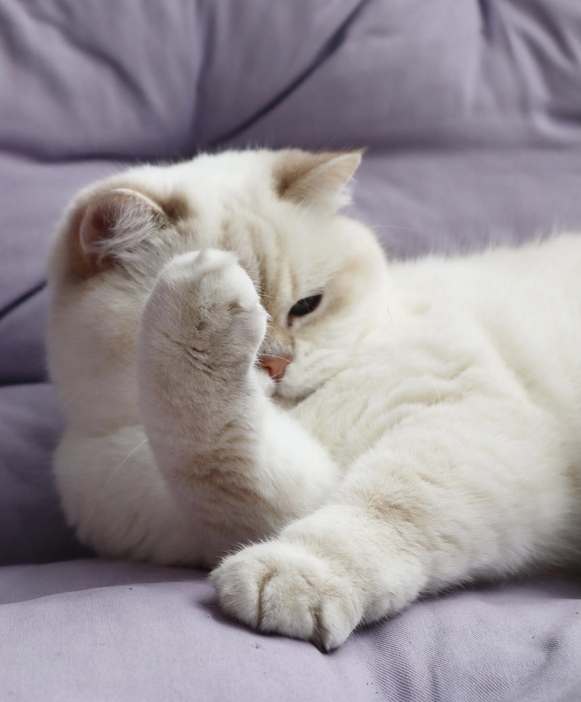

I am a junior year student majoring in computer science.
To know more about me, please search on Baidu.
This is my favorite cat:
My favorite color is iceberg blue.
Beihang University,
School of Computer Science and Engineering,
Bachelor of Engineering.
I am currently in my junior year.
My research interests mainly are:
Visual Compuring: Vision & Graphics
Human-computer Interaction: Text Entry & User Interface
Besides, I am seeking for intern opportunities.
You can reach me via email: lau@buaa.edu.cn
I am also a qualified sleeper and an amatuer musician.
My love for life: PungGaw!!!
My Favorite Quote:
The unique fame that Leonardo enjoyed in his lifetime and that, filtered by historical criticism, has remained undimmed to the present day rests largely on his unlimited desire for knowledge, which guided all his thinking and behaviour. An artist by disposition and endowment, he considered his eyes to be his main avenue to knowledge; to Leonardo, sight was man’s highest sense because it alone conveyed the facts of experience immediately, correctly, and with certainty.
My goal is to: Bridge the gap between technology and human.
HCI is my favorite field.
Beihang University,My favorite book: The Godfather by Mario Puzo.
This text will be written from right to leftTry some colors.